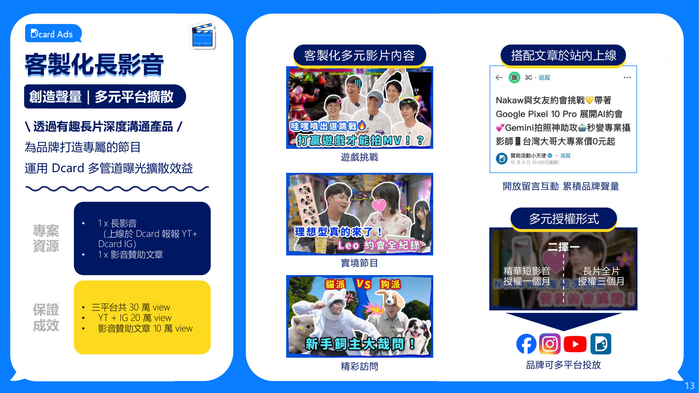

one-meter｜活動提案
Q4 品牌曝光活動
與 Dcard 街訪合作，讓更多人認識並信任 one-meter
A行銷波段
分三個波段執行。Dcard 街訪影音是第一波，負責打開聲量，KOL 接力擴大口碑，再由會員 EDM 喚回老客戶。
WAVE 1打開聲量
Dcard 街訪長影音
影片＋贊助文章＋抽獎
- 影片＋文章觀看300,000 次
- 達成期間上線後 7 天
WAVE 2擴大口碑
KOL 合作
2 位 KOL 分享，搭配廣告推廣
- 內容總觀看／觸及200,000 次
- 互動率≥ 3%
WAVE 3喚回老客
保固網會員 EDM
對 21,081 位既有會員發送品牌訊息與抽獎活動
- 發送會員數21,081 人
- 開信率50%
- 預估開信約 10,500 人
B宣傳目的
提升品牌知名度
讓更多人知道 one-meter 不只一款產品出名，旗下多款家電都很受歡迎，能幫大家解決生活中的各種困擾。
用第三方內容建立信任
由 Dcard 主持人街訪路人、自然帶出產品，比品牌自己說更有說服力，建立「很多人都在用 one-meter」的印象。
承接搜尋，累積口碑
看完影片的人會去搜尋。站內贊助文章讓搜尋結果出現 one-meter 的內容，並透過留言與抽獎累積討論。
產出可延伸使用的素材
影片附免費授權，後續 KOL 合作、社群廣告與 EDM 都能共用，不必另外拍片。


C為什麼用街訪形式
影片多到看不完，觀眾記得的不是「拍了什麼」，而是「誰在說」。
品牌自己講的廣告很容易被滑掉。街訪讓路人說出真實想法，再由主持人把話題接到產品，觀眾看的是一段有趣的對話，品牌訊息自然被記住。
路人真實回答從年輕人關心的生活話題切入，回答好笑又真實，吸引看完
主持人帶到產品話題自然轉到 one-meter 能解決的需求，不突兀
觀眾記住品牌對產品留下好感，進一步去搜尋、留言討論
01
第三方說服力
說話的是一般路人與 Dcard 主持人，不是品牌自己，觀眾更願意相信。
02
容易看完、記得住
爆笑、有梗的街訪對話讓人看完整支影片，品牌在笑點中被記住。
03
整支為品牌客製
主題依 one-meter 的溝通重點發想，不是只在節目中插一段廣告。
04
引發留言討論
路人的回答常讓觀眾想表達自己的看法，帶動留言與分享。

D方案內容
拍攝 1 支
客製化街訪長影片（15 分鐘以內）
Dcard 主持人主題為品牌客製腳本、剪輯各修改 2 次
YOUTUBE
Dcard 報報
完整長片上線，資訊欄放品牌介紹與連結
FACEBOOK
Dcard 官方粉專
貼文 ×2，112 萬追蹤
DCARD 站內
影音贊助文章
內嵌影片＋抽獎活動，開放留言互動
保證觀看200,000views
YouTube＋FB
保證觀看100,000views
贊助文章
上線後 7 天內合計300,000 views

製作流程（約 30 個工作天）
- 簽約提供產品資料
- 主題與腳本品牌回饋 2 次
- 街訪拍攝北北基桃單一地點
- 剪輯確認A copy／B copy
- 上線影片＋贊助文章
E預期效益
| 效益 | 內容 | 指標 |
|---|---|---|
| 影音曝光 | Dcard 報報 YouTube＋Dcard 官方 FB 貼文 ×2 | 保證 200,000 views |
| 站內文章曝光 | 影音贊助文章，依商業文章分發至合適看板 | 保證 100,000 views |
| 社群互動 | 文章開放留言＋抽獎活動，累積品牌討論 | 留言數、參與人數 |
| 老客戶再行銷 | 抽獎活動訊息透過保固網會員 EDM 觸及既有客戶 | EDM 開信／點擊 |
| 導流電商平台 | 影片資訊欄、FB 貼文與贊助文章放上電商平台連結（官網、momo、蝦皮），看完影片可直接點擊購買 | 導流點擊數、導購業績 |
| 廣告素材 | 授權影片投放品牌 IG／FB／YouTube 及 Dcard 站內 | 廣告投放成效 |
總預算NT$800,000